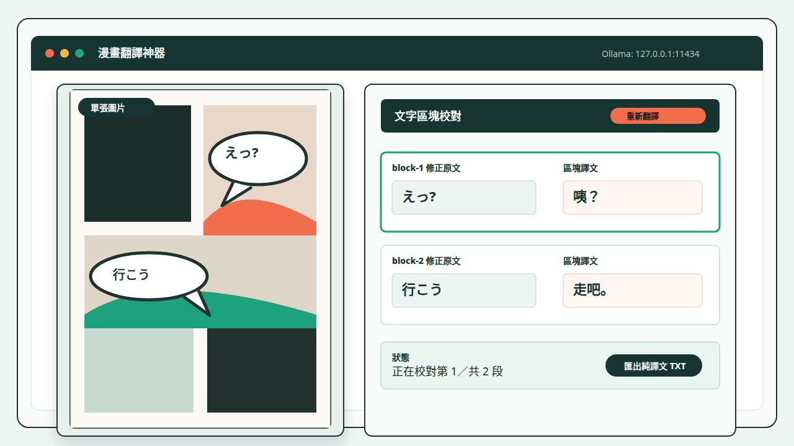

漫畫翻譯神器會保存上傳圖片嗎？
後端不保存上傳圖片；圖片仍會經過 browser、local backend 與 Ollama，因此這是降低遠端外流風險的 local-first 流程，不是絕對私密保證。
Local-first manga OCR translator
把單張漫畫圖片轉成可修正的文字區塊與區塊譯文。OCR、翻譯模型與提示詞都能檢查，修正原文後再重新翻譯，不需要把流程交給遠端 SaaS。

適合想在自己機器上檢查 OCR 與翻譯品質的讀者、譯者與開源工具使用者。頁面本身是靜態 landing；實際翻譯 app 與本頁分離。
上傳圖片並選好 OCR 模型與翻譯模型後，WebUI 會自動連續產生文字區塊與區塊譯文。每個區塊保留可修正原文，讓你先校對模型辨識結果，再只重新翻譯目前文字區塊。
介面把圖片預覽和文字區塊校對表分開呈現，避免把譯文直接覆蓋到圖片上。這讓每段文字的原文、區塊譯文、模型選擇與提示詞來源都能被檢查。
專案使用 FastAPI backend、React/Vite frontend 與 Ollama。以下指令是本機開發流程摘要，完整內容請看 README。
ollama serve
ollama pull gemma3:latest
ollama pull qwen3:latestuv sync
uv run uvicorn app.main:app --app-dir backend --host 127.0.0.1 --port 8000cd frontend
npm install
npm run dev後端不保存上傳圖片；圖片仍會經過 browser、local backend 與 Ollama，因此這是降低遠端外流風險的 local-first 流程，不是絕對私密保證。
後端不保存上傳圖片；圖片仍會經過 browser、local backend 與 Ollama，因此這是降低遠端外流風險的 local-first 流程，不是絕對私密保證。
不會。這是放在 docs 目錄的靜態 HTML/CSS 頁面，產品 app 仍由 frontend 目錄中的 React/Vite 專案提供。